Source Sampling¶
Theory¶
Meshes can be used to represent particle source distributions for Monte Carlo radiation transport. On a mesh, source intensity is discretized spatially (into mesh volume elements) and by energy (into energy bins). In order to randomly sample these distributions to select particle birth parameters (position, energy, statistical weight) a discrete probability density function (PDF) must be created, which can be sampled with pseudo-random variates. It is convenient to create a single PDF to describe all of phase space; in other words, each bin within the PDF represents the probability that a particle is born in a particular energy group within a particular mesh volume element.
In pyne, meshes define volumetric source density  with units of
. In order to find the source
intensity of a single phase space bin (of index 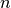), the density must be
multiplied by the volume of the mesh volume element:
with units of
. In order to find the source
intensity of a single phase space bin (of index 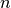), the density must be
multiplied by the volume of the mesh volume element:
The probability 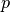 that a particle is born into a particular phase space bin is given by the normalized PDF:
where  is the total number of phase space bins (the number of mesh
volume elements and energy groups). Phase-space bins can be selected from this
PDF and all particles will have a birth weight of 1. This is known as analog
sampling. Alternatively, a biased source density distribution
can be specified yielding a biased PDF . Sampling the biased
PDF requires that particles have a statistical weight:
is the total number of phase space bins (the number of mesh
volume elements and energy groups). Phase-space bins can be selected from this
PDF and all particles will have a birth weight of 1. This is known as analog
sampling. Alternatively, a biased source density distribution
can be specified yielding a biased PDF . Sampling the biased
PDF requires that particles have a statistical weight:
Once a phase space bin is selected a position must be sampled uniformly within the selected mesh volume element to determine the (x, y, z) birth position, and energy must be uniformly sampled uniformly within the selected energy bin.
Implementation¶
The Sampler class reads and optionally from a MOAB mesh. PDFs are created using the method described above. In order to efficiently sample these PDFs an alias table is created [1][2]. This data structure requires an setup step, but then allows for sampling. Monte Carlo radiation transport typically involves the simulation of 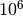 to particles, so this expensive setup step is well-justified.
In the analog sampling mode, an alias table is created from 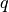. In the uniform and user-specified sampling modes, an alias table is created from and birth weights are calculated for each phase space bin. In the uniform sampling mode, is calculated by assuming is 1 for all phase space bins (all phase space bins are equiprobable).
The method for uniformly sampling within a mesh volume element of Cartesian mesh
is straightforward. A vertex of the hexahedron () is chosen and three
vectors are created: , , and .
Each vector points to an adjacent vertex (in the x, y, z, direction
respectively) with a magnitude equal to the length of the edge connecting the
vertex to the adjacent vertex. Three random variates are chosen (,
, ) in order to randomly select a position ( )
within the hexahedron:
)
within the hexahedron:
A similar method is used for uniformly sampling within a tetrahedron, as described in [3].
Assumptions¶
The Sampler class chooses the (x, y, z) position within a mesh volume element with no regard for what geometry cell it lies in. Cell rejection must be implemented within the physic-code-specific wrapper script.
Sample Calculations¶
This section provides the sample calculations to justify the results in the nosetests: test_uniform, test_bias, test_bias_spacial.
Consider a mesh with two mesh volume elements with volumes (250, 750). The source on the mesh has two energy groups. The source density distribution is:
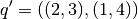
The source intensity is found by multiplying by the volumes:
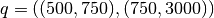
Normalizing yields the analog PDF:
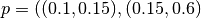
Case 1: Uniform Sampling¶
For uniform sampling the biased source density distribution is:
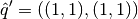
The biased source intensity is found by multiplying by the volumes:
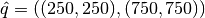
Normalizing yields the biased PDF:
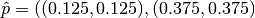
The weights of particle born from these phase space bins should then be the ratio of the unbiased to biased PDF values:
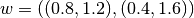
Case 2: User-Specified Biasing¶
Now consider some user-specified bias source density distribution:
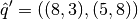
The biased source intensity is found by multiplying by the volumes:
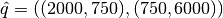
Normalizing yields the biased PDF:
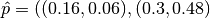
The weights of particle born from these phase space bins should then be the ratio of the unbiased to biased PDF values:
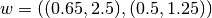
References¶
[1] M. D. Vose, IEEE T. Software Eng. 17, 972 (1991)
[2] A. J. Walker, Electronics Letters 10, 127 (1974); ACM TOMS 3, 253 (1977)
- [3] C. Rocchini and P. Cignoni, “Generating Random Points in a Tetrahedron,”
- Journal of Graphics Tools, 5, 200–202 (2001).
Further Reading¶
- [4] E. Biondo, A. Davis, A. Scopatz, P. P.H. Wilson, “Rigorous Two-Step
- Activation for Fusion Systems with PyNE,” Proc. of the 18th Topical Meeting of the Radiation Protection & Shielding Division of ANS, Knoxville, TN (2014).
- [5] Relson, E. “Improved Methods For Sampling Mesh-Based Volumetric Sources In
- Monte Carlo Transport.” MS thesis University of Wisconsin, Madison WI, 2013.